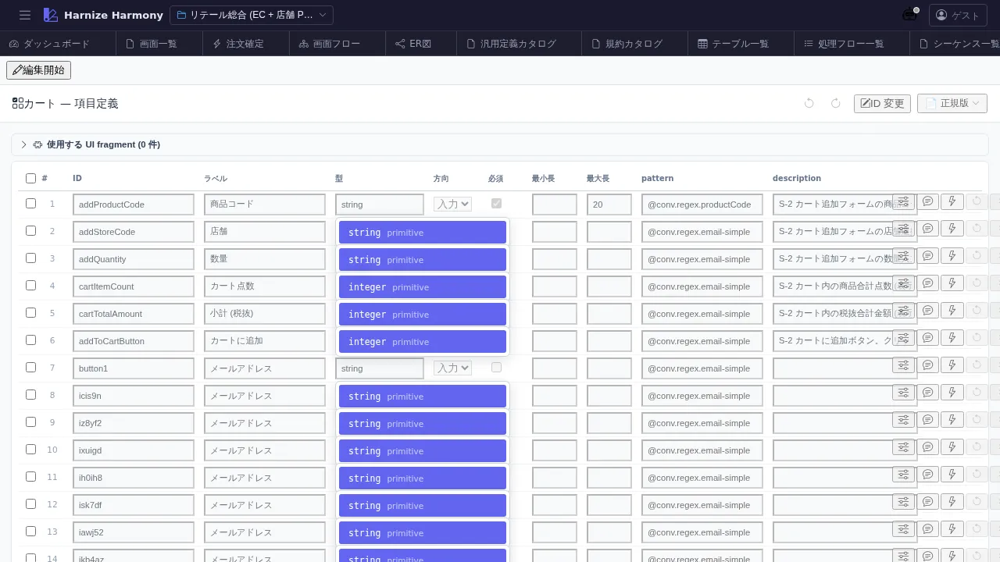

画面項目編集
対象画面:
ScreenItemsView(frontend/src/components/screen-items/ScreenItemsView.tsx) ルート:/w/:wsId/screen/items/:screenId種別: マルチインスタンスタブ
概要
Screen 内の各 項目 (input / button / link / display 等) を構造的に編集する。Designer で配置した要素を「画面項目」という業務レベルで扱い、ID / ラベル / 種別 / 入力検証 / 表示条件 / イベント (trigger) などを定義する。/process-flow/edit/:id で参照される screen.item.{id} の発生源。
到達経路
- 画面一覧 (
/screen/list) → カード上の「項目定義」アイコン - Designer (
/screen/design/:id) → 「項目定義へ」ボタン - 直接 URL:
/w/<wsId>/screen/items/<screenId>
画面構成

主要エリア
- EditorHeader — 「画面項目: <Screen 名>」+ 保存 / 破棄 / id 変更
- 項目一覧表 — 列: 順番 / ID / 表示名 / 種別 (input/button/display/select/checkbox/link/file 等) / 必須 / 検証ルール / 説明
- 編集パネル — 行選択で詳細編集 (initial value / placeholder / event trigger 等)
- 検証状態 — 共通規約違反 / 未参照項目 のサマリ
主要操作
| 操作 | 手段 | 結果 |
|---|---|---|
| 項目追加 | 「項目を追加」 / 表内のリネームから | 行追加 |
| ID 自動命名 | 「AI で命名」 (項目選択後) | /rename-screen-ids skill 連携で AI 推論名を提案 |
| 編集 | 行クリック | 右パネルで詳細編集 |
| 並び替え | 行ドラッグ | 表示順 = 業務順 (Tab key 移動順に影響) |
| 削除 | 右クリック → 「削除」 / Delete | process-flow 参照ありは警告 |
| rename refactor | 行右クリック → 「ID 変更…」 | RenameEntityDialog (画面内のみ unique) |
| 検証 | autosave 後 | warning / error バッジ表示 |
データ前提
- 空状態: 「項目が未定義」プレースホルダ。Designer で配置した部品から自動採番 (
item-1等) で初期化される場合あり - 意味のある状態: retail の
cartは商品行 / 数量 / 削除ボタン / 小計 / 「注文へ進む」ボタン 等の項目で構成
関連仕様書
docs/spec/screen-items.md— 画面項目の責務 / 種別一覧 / 検証ルールdocs/spec/list-common.md
関連 skill
/rename-screen-ids— 自動採番 ID を業務名に一括リネーム
既知の制約・注意
- Designer (canvas) と本画面で項目集合が一致するとは限らない — Designer 側で要素を追加しただけだと項目定義が未生成のことあり (今後 sync 改善検討)
- 画面項目 ID は 画面内で unique、process-flow からは
screen.item.<id>で参照 - 検証ルール変更時は process-flow 側の条件分岐への影響を必ず確認